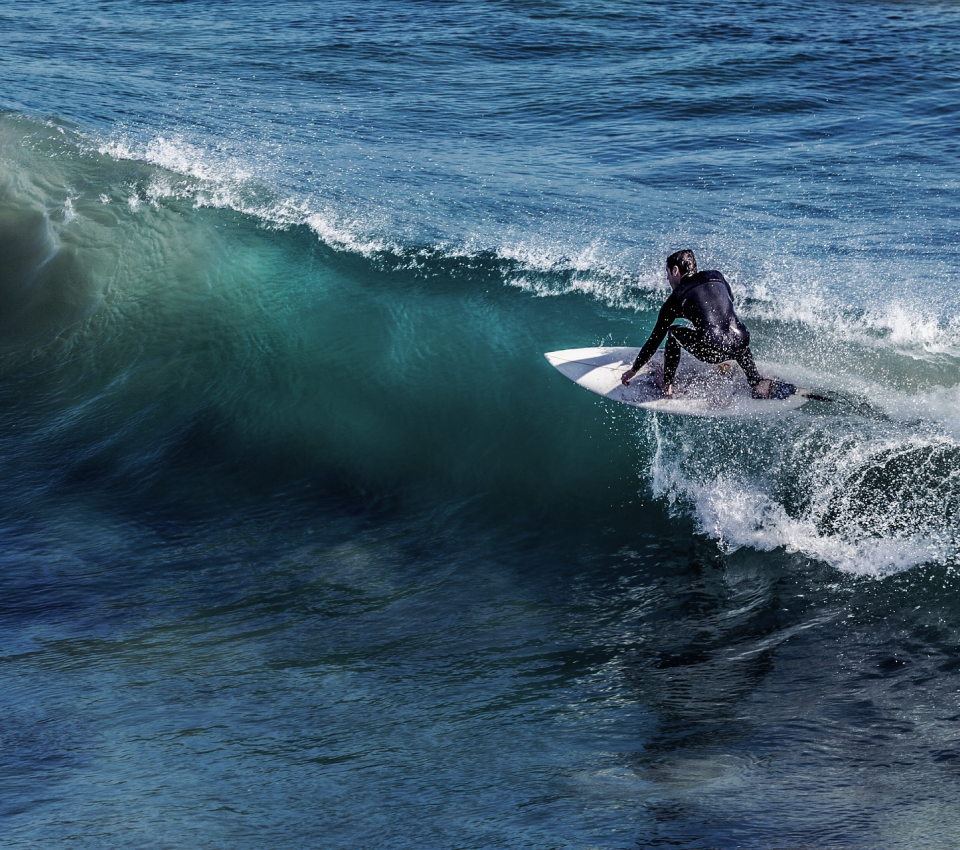
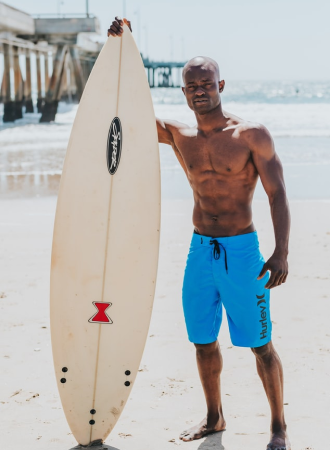
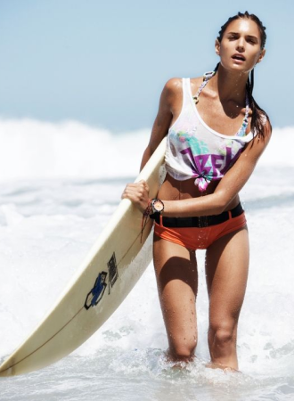
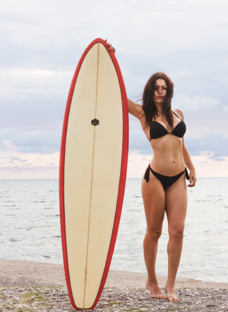

Школа серфинга на канарских Островах
Канарские острова не случайно называют европейскими Гавайями – это идеальное место для поклонников серфинга: стабильный теплый ветер круглый год, песчаные пляжи, километры нетронутых просторов и прозрачное море.
Именно здесь лучшее в Испании место, в котором можно пройти обучение серфингу. Кроме того, что зимой и осенью сюда приходят огромные атлантические волны, Фуэртевентура может похвастать множеством мелководных спокойных лагун.
Серфинг на Канарских островах доступен круглый год – и волны, и подходящая погода здесь есть всегда. Причем волн, подходящих по уровню, сможет найти и настоящий профи, и новичок.
Перечисляя достоинства, нельзя обойти и то, что пляжи Фуэртевентуры самые протяженные на Канарах.
Пока что вы только хотите понять, что такое серфинг, или уже испытали всю прелесть катания на волнах, но желаете поднять свой уровень? Наша школа серфинга сможет предложить обучение для любого уровня подготовки.
Четыре часа увлекательных занятий в день помогут вам уверенно покорять волны, почувствовать себя настоящим серфингистом.
Основные достоинства нашей русской школы – высокое качество преподавания и организации занятий, безопасность и отличный инвентарь и экипировка.
Сначала мы определяем уровень катания и физической подготовки и только потом составляем программу подготовки.
Преподаватели нашей школы серфинга в числе лучших серферов на Канарских островах. Среди них – чемпион Европы по лонгборду, который с радостью поделится опытом как с новичками, так и с более опытными серферами.
Весь тренерский состав регулярно участвует в семинарах и курсах повышения квалификации, которые проводятся по всему миру.
Методика обучения серфингу рассчитана как на новичков, так и на серферов среднего уровня. Тренеры находят подход к каждому.


Главный инструктор

инструктор

инструктор